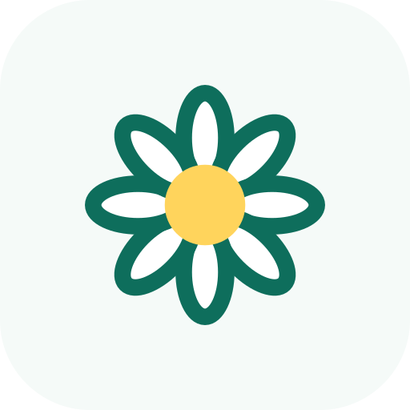
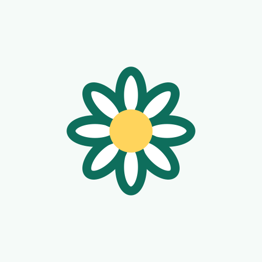
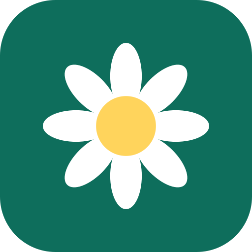
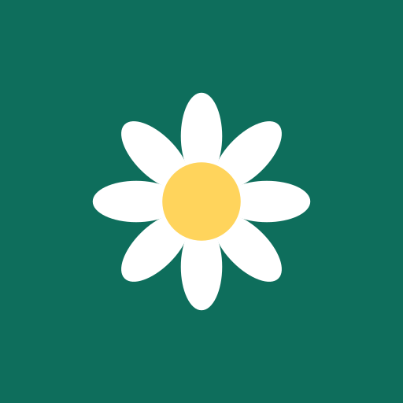
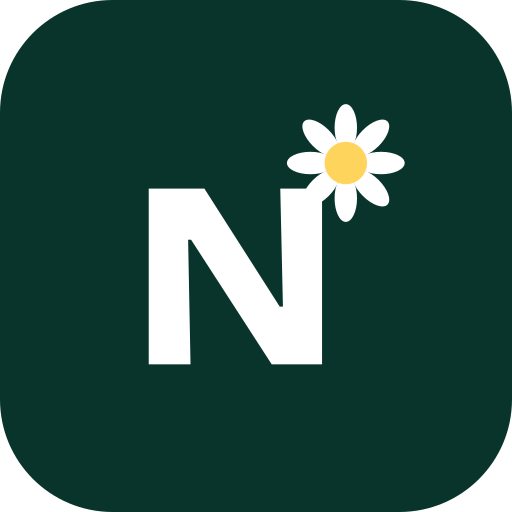
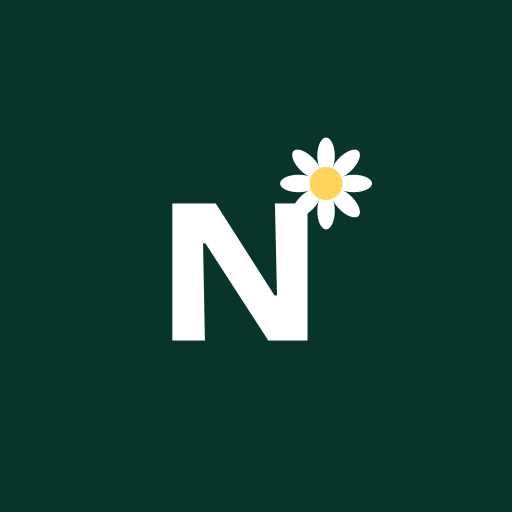

Nowiutko logo directions
Three ways to build the logo from the chamomile (white petals, sun-yellow centre). Same palette and the same wordmark typeface (Bricolage Grotesque, outlined to vector) in all three. Each is shown large, then at favicon, admin app icon (with the maskable crop) and Facebook avatar sizes.
Linia — the line chamomile
A fine teal line drawing of a chamomile on a stem with one leaf, yellow centre as the only colour. The gentlest and most hand-made of the three; closest to the logo pins on the board. At small sizes the stem goes and the flower is redrawn with fewer, bolder petals.
Symbol
Small-size symbol
Favicon in a browser tab (16 px) and at 32 / 48 px
Admin app icon: 192 px, on a home screen at 60 px, and the maskable version in a circle crop

App
maskableFacebook avatar (circle crop) at 170, 96 and 40 px
Odznaka — the badge
A solid teal badge with a white chamomile and a sun-yellow centre. The strongest at small sizes and the most recognisable on a phone home screen or as a Facebook avatar. Reads as a friendly "app", warmer than a clinical cleaning logo.
Symbol
Small-size symbol

Favicon in a browser tab (16 px) and at 32 / 48 px
Pranie wózków PoznańNowiutkoAdmin app icon: 192 px, on a home screen at 60 px, and the maskable version in a circle crop

App
maskableFacebook avatar (circle crop) at 170, 96 and 40 px
Kropka — the name with the flower as its dot
Wordmark first: the dot of the "i" in Nowiutko is a tiny chamomile. No separate symbol to place, so the name is the logo. At small sizes it becomes an N monogram on deep teal with the same flower as its corner dot.
Monogram
Small-size monogram
Favicon in a browser tab (16 px) and at 32 / 48 px
Admin app icon: 192 px, on a home screen at 60 px, and the maskable version in a circle crop

App
maskableFacebook avatar (circle crop) at 170, 96 and 40 px